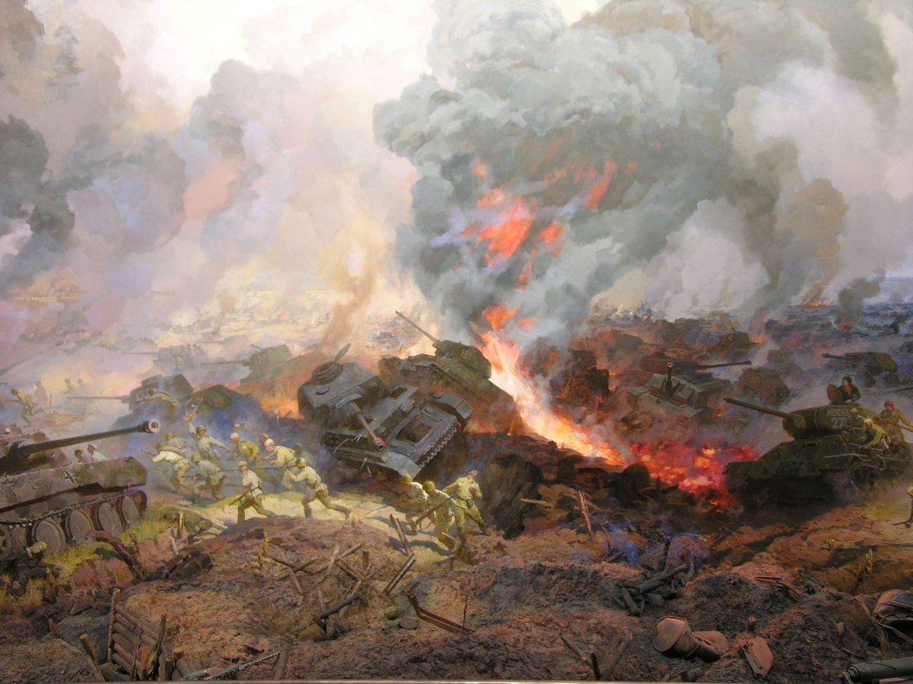

В июле-августе 1943 года войска Центрального, Воронежского и Степного фронтов генералов Рокоссовского, Ватутина и Конева нанесли поражение армиям Моделя, Кемпфа и Гота в Курской битве, окончательно переломив ход войны
Курская битва 1943 года шла с 5 июля по 23 августа, в ней участвовало более 2.1 млн человек, более 6.2 тысяч танков и 4.5 тысяч самолетов, шла она на территории Курской, Орловской, Белгородской, Харьковской областей и завершилась крахом немецкой группировки.
Курское сражение — крупнейшее в истории противостояние с участием танковых соединений.
За 50 дней на фронте в 250 км было задействовано около 5000 советских танков и самоходок и около 2800 немецких танков и штурмовых орудий.
Немцы стремились после поражения под Сталинградом перехватить инициативу.
Используя новейшие бронемашины «тигр» и «пантера», вермахт предполагал разбить крупную (1.3 млн бойцов) группировку войск Центрального, Степного и Воронежского фронтов в районе Курской дуги (Курского выступа).
Победа под Курском позволила бы Гитлеру на Восточном фронте перейти от обороны к наступлению. Или на северном (на Москву), или на южном (на Кавказ) направлениях.
Курская битва стала первым сражением Великой Отечественной, к началу которой у СССР было превосходство над Германией по танкам (в 1.5 раза), самолетам (в 1.4 раза), артиллерии (в 2 раза) и личному составу (боле чем в 1.5 раза).
Приказ о начале наступления под Курском 3 мая 1943-го Гитлер отдал еще 15 апреля. Но из-за скепсиса генералитета, встревоженного «усилением обороны русских», операцию перенесли на июль. В 6 утра 5 июля 1943-го на северной части фронта немцы нанесли бомбовый и артиллерийский удары — это принято считать началом Курской битвы. 18 и 23 августа были завершены Орловская и Белгородско-Харьковские операции — финал Курской битвы. Непосредственно Курская оборонительная операция длилась с 5 по 23 июля 1943 года.
Сосредоточив до 50 дивизий (в том числе 18 танковых и моторизованных) общей численностью более 900 тысяч человек, немцы в ходе операции «Цитадель» предполагали прорвать три рубежа обороны Центрального фронта. Но за 5 дней 9-я немецкая армия потеряла около половины танков и вынужденно перешла к обороне. 12 июля Красная армия начала контр-наступательную операцию «Кутузов».
Кульминацией Курской битвы стало Прохоровское сражение. Его даты — с 10 по 16 июля. Немцы планировали окружить нашу 69-ю армию.
Самый масштабный танковый бой под Прохоровкой произошел 12 июля. По разным данным немцы задействовали 700 танков и штурмовых орудий (дивизии СС «Мертвая голова»» и «Лейбштандарт СС Адольф Гитлер»), с советской стороны — от 790 до 808 танков и САУ (в основном, 5-я армия генерала Ротмистрова). Разнятся данные потерь. Немцы указывали от 80 до 100 боевых машин, советские источники — до 400. Наши 18-й и 29-й корпуса 5-й гвардейской танковой армии потеряли до 250 машин.
14 июля немцы попытались окружить пять дивизий 69-й армии. Но 15 июля перешли к обороне.
20 и 23 июля войска Воронежского и Степного фронтов перешли в наступление. Курская операция завершилась победой Красной армии.
Перелом в ходе Великой Отечественной войны, заложенный победой в Сталинграде, окончательно оформился после Курской битвы. По ее итогам стратегических наступательных операций гитлеровская Германия на Восточном фронте не проводила. Она перешла к обороне и контратакующим действиям. И никогда уже не имела паритета с советскими войсками или превосходства над ними — ни в живой силе, ни в военной технике. Главный союзник Гитлера в Европе — Италия — после Курской битвы вышла из войны на стороне Германии.